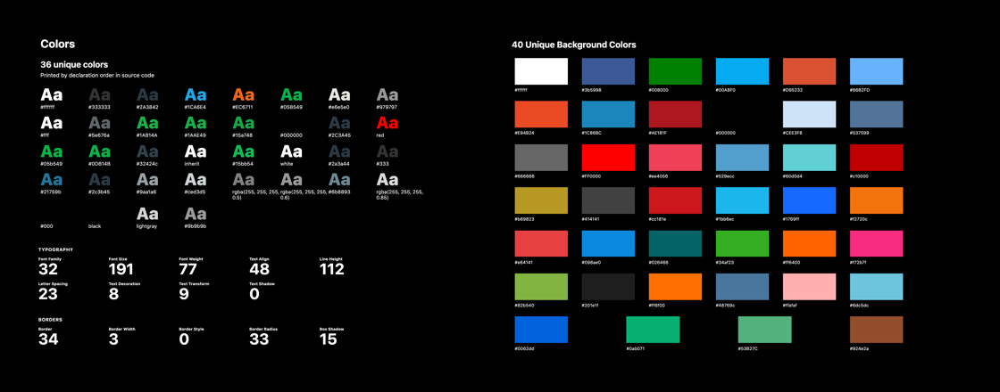
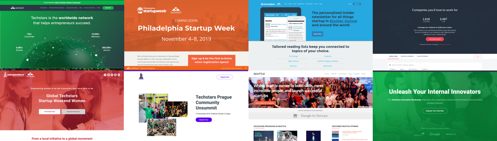
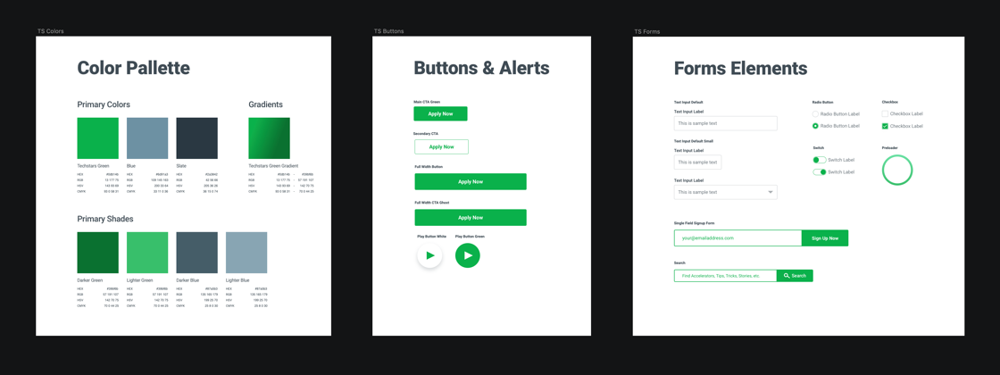
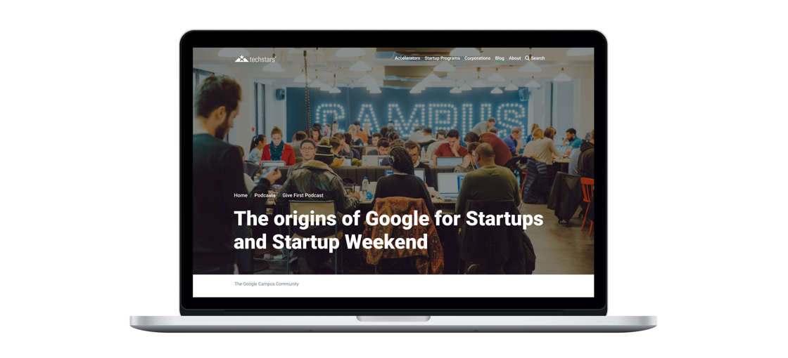
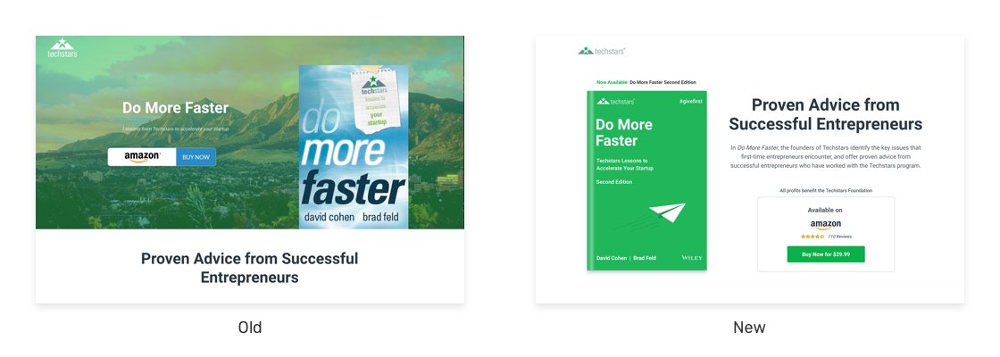
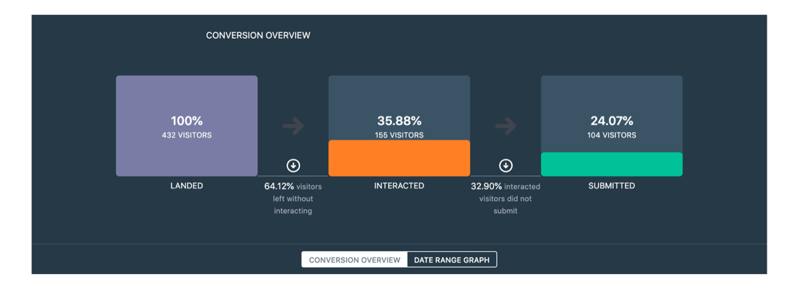
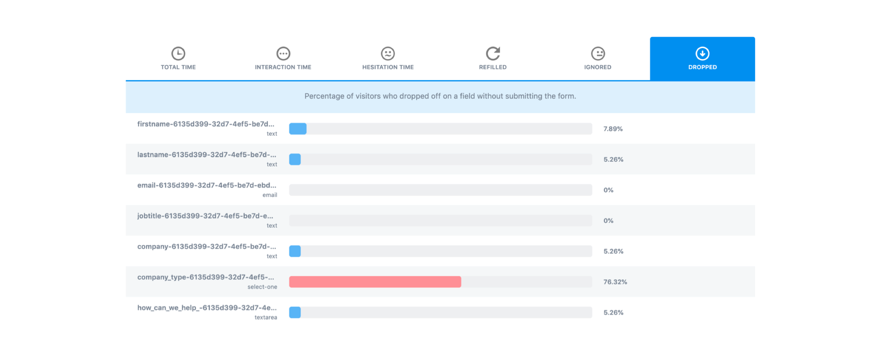

<body class="white {{ page.class }} ">
	{% include nav.html %}
	<section id="hero" class="">
		<div class="container-text">
			<div class="hero-text">
				<h1>Designing For Scale at Techstars</h1>
			</div>
		</div>
		<div class="container-img container">
			<div class="reveal-holder">
				<div class="reveal-block" data-aos="reveal-right"></div>
					<video src="../assets/img/ts-vid.mp4" type="video/mp4" autoplay loop muted></video>
			</div>
		</div>
		<div class="container-text">
			<h2>Summary</h2>
			<p class="lead">Techstars is the worldwide network that helps entrepreneurs succeed. We have hundreds of thousands of startup founders, investors and mentors in our network, and 30+ web products to meet their needs.</p>

			<p class="lead">I currently lead the user experience and digital strategy at Techstars. As we continue to grow as a company and diversify our revenue, I’ve worked to build a scalable design system and optimize our digital touchpoints.</p>
			<h3>Highlights</h3>
			<ul>
				<li>Built and maintain Techstars' design library</li>
				<li>Generated $66M in enterprise lead pipeline through a design-first approach to Techstars web products</li>
				<li>Revamped Techstars onboarding process for our accelerator companies</li>
			</ul>

			<h2>Building the Techstars Design System</h2>

			<p class="lead">What started out as a single accelerator in Boulder, CO, Techstars has scaled to over 150 countries worldwide, and in the process we'd amassed 10 years of inconsistent styles, branding, and typography along the way.</p>

			<p class="lead">As a first step in providing a consistent user and brand experience, I conducted an audit of our digital properties to see what we were dealing with. When it was all said and done, I ended up with 30+ web products built over multiple tech stacks, with
				dozens of colors and fonts in the mix.</p>
		</div>

		<div class="container-img container">

			
		</div>
		<div class="container-img container">

			
		</div>

		<div class="container-text">
			<p class="lead">I set out to create a simplified system with the following goals in mind:</p>
			<h3>Consistency</h3>
			<p class="lead">How do we provide a cohesive web experience? At the very least, how do we make sure users don't have to wonder if they're still on a Techstars-owned domain?</p>
			<h3>Extensibility</h3>
			<p class="lead">Techstars co-brands several of it's products with companies like Google, Amazon, and Microsoft. In addition, we have thousands of alumni companies that have gone through our programs, how does Techstars become a vessel to let these brands shine without
				stealing the spotlight?</p>
			<p class="lead">Also, we have several community leaders, stakeholders, and outside agencies who work with Techstars. How do we empower them to build the best possible experiences on their own without being a bottleneck?</p>
			<h3>Scalability &amp; Speed</h3>
			<p class="lead">Lastly, the company is scaling at an incredibly rapid pace, how do we build a system to grow with it? And how do we build a solid foundation so we don't have to reinvent the wheel every time we kick off a new web project?</p>

		</div>

		<div class="container-img container">

			
		</div>

		<div class="container-text">
			<p class="lead">Along with consolidating our elements, I extended this minamlist approach throughout the grid system and layout choices, reserving Techstars green specifically for actionable or important moments during the web experience.</p>
			<p class="lead">The result was a super streamlined design system that could easily extend itself to our many products.</p>

		</div>

		<div class="container-img container">

			
		</div>

		<div class="container-img container">

			
		</div>
		<div class="container-img container">

			
		</div>

		<div class="container-text">
			<h2>Improving Conversion Rates</h2>
		</div>

		<div class="container-img container">

			
		</div>
		<div class="container-text">
			<p class="lead">Despite a 24% conversion rate on our main corporate contact form (which on the surface is REALLY good), through testing we recieved feedback that our forms caused friction and were not as user-friendly as the data would believe.</p>

			<p class="lead">When looking at each step of the funnel a little closer, we discovered that a third of users that started the form ultimately abandoned it.</p>
		</div>
		<div class="container-img container">

			
		</div>
		<div class="container-text">
			<p class="lead">We zeroed-in on the form fields themselves and identified that 76% of users that dropped off, did so because of a single field, asking users to self-identify.</p>
			<p class="lead">While ultimately, that form field helped our Demand Generation team segment our audiences, it wasn't user-first and caused friction. <strong>We generated $66M in the sales pipeline</strong> by optimizing these conversion points.</p>

		</div>
	</div>
</section>
